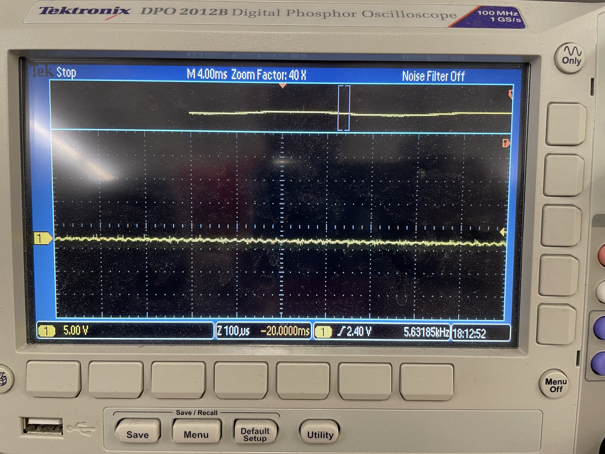
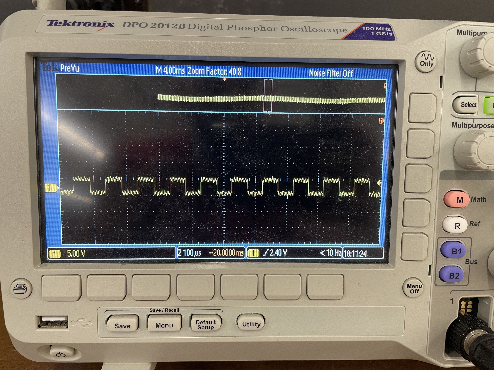
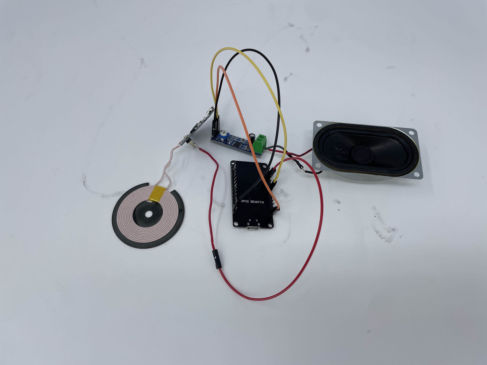

Week 7: Output Devices
Oscilloscope
Using an Oscilloscope was actually very helpful for this week because I had run into an issue with the wireless charger I was planning on using for my final project. The main issue being that when I used a multimeter and measure a specific pin on the wireless charger it read 5V when there was no phone on it, and 2.5V when a phone was on it and being charged. However, when I hooked it up to my ESP32S2 I was getting widely different results when I used analogRead on the pin with values varing between 0 and 5 volts. So I wanted to look at the oscilloscope to get a better sense of what was going on with the voltage output by the wireless charger.
Reading when Phone is not on Charger
Reading when Phone is on Charger
From the oscilloscope, I see that when the charger is not charging a phone it outputs a consistent voltage which makes sense with the 5V that I read on the multimeter. However, when you put the phone on the wireless charger there is a fluctation in the voltage by 5 Volts (fluctuating between 5 and 0 at an interval of about every 0.3 milliseconds or 300 microseconds). This reading help me understand the problems I was having with reading the voltage on my ESP32S2. At first the multimeter gave me the impression that when the phone is on the charger, that the pin I was measure goes from outputting a consistent 5V to a consistent 2.5V. However, that is not what it does, it fluctutates between 5 and 0 volts, and I am guessing that the amount of sampling the multimeter is much higher than what the ESP32 does when it calls analogRead and because of that the multimeter produces a of 2.5V because it takes a lot of samples and the average of 5 and 0 is 2.5. While when the ESP32 calls analogRead it returns a value much closer to 5 or 0. And if I want to solve this problem myself then I will have to implement sampling on my own, and call analogRead multiple times and average those readings to get a reading close to 2.5V.
Wireless Charger and Speaker Setup
Main.ino
#include "PhoneDetector.h"
#include "SoundData.h"
#include "XT_DAC_Audio.h"
XT_Wav_Class *test;
XT_Wav_Class Sound(Force);
XT_DAC_Audio_Class DacAudio(25,0);
uint32_t DemoCounter=0;
bool phoneDetected = false;
PhoneDetector detector(34);
void setup() {
Serial.begin(115200);
pinMode(phonePin, INPUT);
test = &Sound;
}
void loop() {
phoneDetected = detector.detect();
DacAudio.FillBuffer();
if((*test).Playing==false && !phoneDetected)
DacAudio.Play(test);
// Serial.println(phoneDetected);
}
PhoneDetector.h
#ifndef PhoneDetector_h
#define PhoneDetector_h
#include
#include "StudyTimer.h"
class PhoneDetector{
private:
bool procrastinating;
int phonePin;
public:
PhoneDetector(int pin);
bool detect();
void signal(bool procrastinating);
};
#endif
PhoneDetector.cpp
#include "PhoneDetector.h";
#include "StudyTimer.h";
PhoneDetector::PhoneDetector(int pin){
this->phonePin = pin;
procrastinating = false;
pinMode(this->phonePin, INPUT);
}
// Return true if phone is on charger false otherwise
bool PhoneDetector::detect(){
int sample = 0;
int SAMPLE_SIZE = 350;
for(int i = 0; i < SAMPLE_SIZE; i++){
sample += analogRead(phonePin);
}
// Serial.println((sample / SAMPLE_SIZE));
return (sample / SAMPLE_SIZE) < 7000;
}
void PhoneDetector::signal(bool procrastinating){
Serial.println(procrastinating ? "this person is procrastinating" : "this person is no longer procrastinating");
}